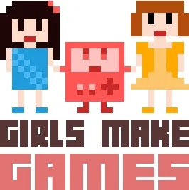
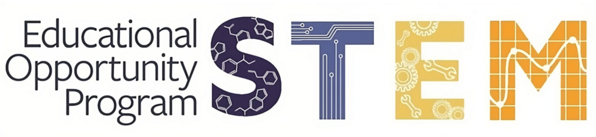
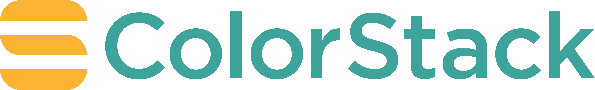
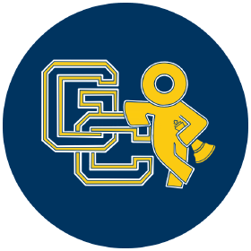

About
Hello! I'm a software engineer passionate about creating beautiful, functional, and user-centered digital experiences. I've always been drawn to the intersection of design and development, and I love bringing ideas to life through code.
As an Afro-Latina woman in tech, I’m committed to pushing for greater representation and accessibility in STEM. I know firsthand what it’s like to grow up without seeing people who look like me in tech spaces or having easy access to tech education. That’s why I strive to build tools, products, and experiences that are inclusive, welcoming, and truly accessible to everyone, especially the next generation of underrepresented creators.
Today, I channel my combined interests in software engineering, machine learning/AI, and graphic design into projects that are both technically sound and visually meaningful. My goal is always the same: build experiences that bring joy, spark curiosity, and make people feel seen.
Experience
Computer Science & AI Instructor
Cal STEM
2025 - Present
Spearheaded AI education outreach across Northern and Southern California,
securing adoption at 100+ schoolsand recording video lessons that reached hundreds of students.
Here's the link to the website where you can access the courses:
Learn Basic Tech
STEM & Adobe Teacher
ID Tech
2025 - Present
Created custom curricula on Python, HTML, Java, C/C++, Adobe Suite for 50+ students, implementing object-oriented programming,
data structures, game development concepts, skills, and projects
Conducted weekly 1-on-1 sessions with students to provide personalized project progress and support
Main focus is teaching students the fundamentals of programming, game development, anddesign.
Marketing Consultant Intern
Kaiser Permanente
Summer 2024
Analyzed social media engagement across 5 digital platforms using data analytics, SQL to understand customer behavior and optimize community outreach strategies
Created and distributed weekly "ICYMI" newsletter synthesizing social media trends and community insights
Developed new webpages on Gender Affi rmation care, putting info across fi ve states into one streamlined webpage.
f
Education
Computer Science Bachelor's of Art
University of California, Berkeley
2023 - Expected 2027
Programs, Organizations & Clubs That Helps Me Grow




